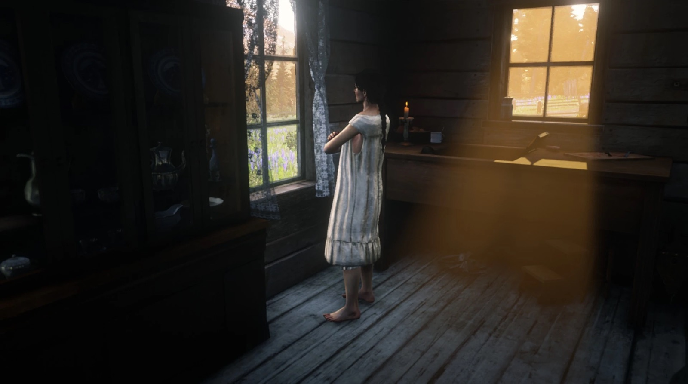
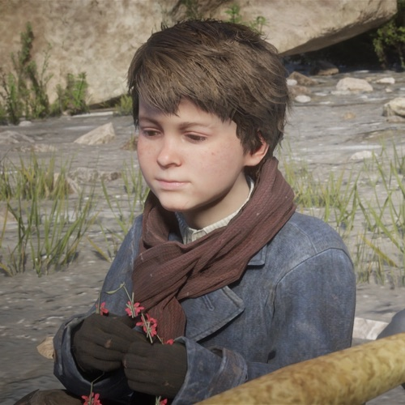

Character · Van der Linde gang
Abigail Marston
Abigail Marston, born Abigail Roberts, is the wife of John Marston, the mother of Jack Marston, and one of the most important figures in the Red Dead Redemption story. A former prostitute who joined the Van der Linde gang, she gave up that life to raise a family and spends years pushing John to do the same.
Fierce, loyal and pragmatic, Abigail is the emotional anchor of the Marston family across both games. Her love for John and Jack, and her refusal to give up on either, drive much of the series' heart.
- Died
- 1914
- Status
- Deceased
- Nationality
- American
- Affiliation
- Van der Linde gang (former)
- Family
- John Marston (husband), Jack Marston (son)
- Games
- Red Dead Redemption, Red Dead Redemption 2
Biography
From the gang to a family
Abigail joined the Van der Linde gang as a young woman and, around 1895, gave birth to a son, Jack, with John Marston. When John briefly abandoned them, it was the women of the gang and a reluctant John who eventually came back that shaped Jack's early years.

Beecher's Hope and after
After the gang's fall, Abigail, John and Jack finally build an honest life on a ranch at Beecher's Hope. That peace is shattered in 1911 when government agents take Abigail and Jack to force John to hunt his old friends. She is widowed when John is killed, and dies a few years later, in 1914.
Personality
Abigail is tough, sharp-tongued and deeply devoted to her family. Years in a hard world left her with no patience for self-pity, and she is often the most clear-eyed person in any room, especially about the cost of the outlaw life.
Her great strength is constancy: she never stops believing John can be a better man, and never stops fighting for Jack's future.
Relationships

John Marston
Her husband and the father of her son. Abigail spends years trying to pull John out of the outlaw life and into the family he keeps almost choosing.

Jack Marston
Her son, whom she fights to give a future away from guns and gangs. Everything Abigail does is, in the end, for Jack.

Arthur Morgan
A gang brother who helps protect her and Jack in the gang's final days, and whose sacrifice helps the Marstons escape.

Sadie Adler
A fellow survivor and friend who stands with the Marstons long after the gang is gone.

Uncle
The work-shy old outlaw who attaches himself to the Marston household and helps run Beecher's Hope.
Death and fate
Behind the scenes
Abigail appears in both Red Dead Redemption (2010) and Red Dead Redemption 2 (2018), one of the few characters present across the whole saga. Red Dead Redemption 2 expands her from a supporting role into a fully realised woman with her own grief, humour and resolve.
Reception and legacy
Abigail is widely seen as one of the series' strongest characters, the moral and emotional centre of the Marston family. Her insistence on a better life is, in many ways, the engine of the entire Red Dead Redemption story.
Trivia
- Her maiden name is Roberts; she becomes Abigail Marston after marrying John.
- She appears in both main Red Dead Redemption games.
- Her kidnapping in 1911 is what forces John into the events of the original game.